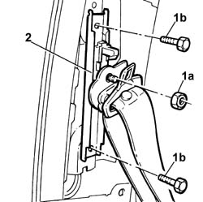

7065A18 HEIGHT ADJUSTER for (one) front seat belt, left or right - R.R.
- Path
- Procedures > 70 FITTINGS > 7065 SEAT BELTS AND ACCESSORIES > 7065A FRONT SEAT BELTS > 7065A18 HEIGHT ADJUSTER for (one) front seat belt, left or right - R.R.
- Kind
- repair procedure (removal / refitting; the operation number is the code)
- Applies to
- all engines; all production periods
- Interactive page
- https://sloeber94.github.io/elrnDB-lThss/en/#/80751
Applies to: all engines; all production periods
 Removing
Removing
 Refitting
Refitting- Disconnect the negative battery terminal.
See in Op. 7040H36 CENTRE PILLAR TRIM LOWER ELEMENT (one), left or right - R.R.
See in Op. 7040H38 CENTRE PILLAR TRIM UPPER ELEMENT (one), left or right - R.R.
1. Undo the fixing nut (1a) and the bolts (1b).
2. Remove the seat belt height adjuster.

Applies to: all engines; all production periods
Refitting
Removing- Check that the seat belt height adjuster works properly.
- Tighten the bolts fixing the adjuster to the pillar.
 | Value - daNm | Fastening | Component | Ø |
|---|---|---|---|---|
. | 2 | Bolt | FRONT SEAT BELT HEIGHT ADJUSTER | M8 |
- Tighten the nut fixing the seat belt height adjuster.
| Value - daNm | Fastening | Component | Ø |
|---|---|---|---|---|
. | 4 | Nut | FRONT SEAT BELT HEIGHT ADJUSTER | 7/16" |
See in Op. 7040H36 CENTRE PILLAR TRIM LOWER ELEMENT (one), left or right - R.R.
See in Op. 7040H36 CENTRE PILLAR TRIM LOWER ELEMENT (one), left or right - R.R.
- Connect the negative battery terminal.
Topics linked from this page (2)
- 7040H36 CENTRE PILLAR TRIM LOWER ELEMENT (one), left or right - R.R.
- 7040H38 CENTRE PILLAR TRIM UPPER ELEMENT (one), left or right - R.R.